MetaData
When a client logs into the game, one of the first things it does is request the server's metadata. There are various
kinds of metadata and
each kind will be detailed below. Generation of metadata is handled by
the MetaDataStore class. Configuration for this class can be specified
via Options:MetaDataStoreOptions.
MetaDataCacheOptions
The MetaDataStoreOptions class contains configuration for the MetaDataStore class. The following properties are
available:
using Chaos.Common.Abstractions;
using Chaos.MetaData.Abstractions;
namespace Chaos.Services.Storage.Options;
public sealed class MetaDataStoreOptions : IDirectoryBound
{
/// <summary>
/// The path to the event meta file
/// </summary>
public string EventMetaPath { get; set; } = null!;
/// <summary>
/// The path to the light meta file
/// </summary>
public string LightMetaPath { get; set; } = null!;
/// <summary>
/// The path to the mundane illustration meta file
/// </summary>
public string MundaneIllustrationMetaPath { get; set; } = null!;
public ICollection<IItemMetaNodeMutator> PrefixMutators { get; } = new List<IItemMetaNodeMutator>();
public ICollection<IItemMetaNodeMutator> SuffixMutators { get; } = new List<IItemMetaNodeMutator>();
/// <inheritdoc />
public void UseBaseDirectory(string baseDirectory)
{
EventMetaPath = Path.Combine(baseDirectory, EventMetaPath);
LightMetaPath = Path.Combine(baseDirectory, LightMetaPath);
MundaneIllustrationMetaPath = Path.Combine(baseDirectory, MundaneIllustrationMetaPath);
}
}
Mutators
Mutators are used to modify item metadata before it is finalized. For example, if you implement a system in your server for enchanting items, the enchanted items would not be completely new items. You could achieve those enchantments by setting the values on Item.cs and letting them serialize as overrides to the template values. To have these items show up in metadata, you would create a mutator that simulates enchantments through non-destructive mutation of an item meta node.
Implement your own mutator as implementations of
the IItemMetaNodeMutator interface and add it to
the MetaDataStoreOptions via the Chaos.Services.Configuration.OptionsConfigurer
Example
Here is an example of a mutator that generates mutations of items similarly to the original enchantment system.
using Chaos.Extensions.Common;
using Chaos.MetaData.ItemMetaData;
using Chaos.Models.Data;
using Chaos.Models.Panel;
using Chaos.Models.Templates;
using Chaos.Scripting.ItemScripts.Abstractions;
namespace Chaos.Scripting.ItemScripts.Enchantments;
public class MagicPrefixScript : ItemScriptBase, IEnchantmentScript
{
/// <inheritdoc />
public MagicPrefixScript(Item subject)
: base(subject)
{
Subject.Prefix = "Magic";
var attributes = new Attributes
{
MaximumMp = 50
};
subject.Modifiers.Add(attributes);
}
/// <inheritdoc />
public static IEnumerable<ItemMetaNode> Mutate(ItemMetaNode node, ItemTemplate template)
{
if (!node.Name.StartsWithI("Magic"))
yield return node with
{
Name = $"Magic {node.Name}"
};
}
}
This mutator is then added to the MetaDataStoreOptions in Chaos.Services.Configuration.OptionsConfigurer
Note
You can have both Prefix and Suffix mutators. When metadata is generated, it will create a cross product of all prefix and suffix mutations
Item MetaData
Item metadata is shown when a player hovers over an item in a shop or the bank. Item metadata is pulled from the details
in the ItemTemplates that you have already created.
Item MetaData Mapping
| Meta Property | ItemTemplate Property | Notes |
|---|---|---|
| Name | Name | The name of the item |
| Level | Level | The level required to equip the item If no level is specified, metadata is displayed as "no limit" |
| Class | Class | The class required to equip the item If no class is specified, metadata is displayed as "all classes" |
| Weight | Weight | The weight of the item |
| Category | Category | The name of the tab the item appears under when displayed in a shop or the bank |
| Description | Description | A short description of the item. This will show under "Features" in shop and bank windows |
Ability MetaData
Ability metadata is shown per-class in the character's profile under the Skills tab. Ability metadata is pulled from
the details in the SkillTemplates and SpellTemplates that you have already created. Each SClass metadata file is
for a specific class. They follow the pattern laid out in the Class
enum.For example, the SClass1 metadata file is for the Warrior class.The SClass2 metadata file is for the Rogue
class.
Ability MetaData Mapping
| Meta Property | ItemTemplate Property | Notes |
|---|---|---|
| IconId | PanelSprite | The icon of the ability |
| Name | Name | The name of the ability |
| Level | Level | The level requires to learn the ability |
| RequiresMaster | RequiresMaster | Whether or not you must be a master to learn the ability |
| Ability | - | TODO |
| PreReq1Name | LearningRequirements | The name of a prerequisite skill or spell |
| PreReq1Level | - | |
| PreReq2Name | LearningRequirements | The name of a prerequisite skill or spell |
| PreReq2Level | - | |
| Str | LearningRequirements | The STR required to learn the ability |
| Int | LearningRequirements | The INT required to learn the ability |
| Wis | LearningRequirements | The WIS required to learn the ability |
| Con | LearningRequirements | The CON required to learn the ability |
| Dex | LearningRequirements | The DEX required to learn the ability |
| Description | Description | A brief description of the ability |
Light MetaData
Light metadata controls the "Light" on maps that are specified within it. Within this metadata you can specify different colors of light, the hours associated with them, and the enum value used to activate it.
Lights.json Mapping
| Meta Property | Notes |
|---|---|
| LightTypeName | The name of the light type. This name will be specified on map templates to allow them to use this light type |
| EnumValue | The numeric value of the LightLevel enum that will activate this light color |
| StartHour | The hour that the light starts (this would be used to update the ingame clock, but there isn't one anymore) |
| EndHour | The hour that the light ends (this would be used to update the ingame clock, but there isn't one anymore) |
| Alpha | The value of the alpha channel for the color of the light. Acceptable values are 0-32, where 32 is fully transparent |
| Red | The value of the red channel for the color of the light. Acceptable values are 0-255, where 255 is fully red |
| Green | The value of the green channel for the color of the light. Acceptable values are 0-255, where 255 is fully green |
| Blue | The value of the blue channel for the color of the light. Acceptable values are 0-255, where 255 is fully blue |
Lights.json defines light types and the enum value to activate them, but you must also specify what light type to use
for each map that you want light levels to be on. You do this by setting the LightType property on the map template.
Example json
This example json defines 6 different colors for the default light type. This light type has been added on a number of
the default maps that come with the server. You can experiment with them by using the /setlightlevel <lightlevel>
command while on the map.
This example also defines 6 different colors for bloodmoon light type, just as another example of what you can do.
[
{
"lightTypeName": "default",
"enumValue": 0,
"startHour": 0,
"endHour": 1,
"alpha": 18,
"red": 6,
"green": 11,
"blue": 60
},
{
"lightTypeName": "default",
"enumValue": 1,
"startHour": 2,
"endHour": 3,
"alpha": 20,
"red": 27,
"green": 1,
"blue": 59
},
{
"lightTypeName": "default",
"enumValue": 2,
"startHour": 4,
"endHour": 5,
"alpha": 23,
"red": 100,
"green": 10,
"blue": 100
},
{
"lightTypeName": "default",
"enumValue": 3,
"startHour": 6,
"endHour": 7,
"alpha": 26,
"red": 170,
"green": 36,
"blue": 50
},
{
"lightTypeName": "default",
"enumValue": 4,
"startHour": 8,
"endHour": 9,
"alpha": 32,
"red": 0,
"green": 0,
"blue": 255
},
{
"lightTypeName": "default",
"enumValue": 5,
"startHour": 10,
"endHour": 11,
"alpha": 32,
"red": 0,
"green": 0,
"blue": 255
},
{
"lightTypeName": "bloodmoon",
"enumValue": 0,
"startHour": 0,
"endHour": 1,
"alpha": 16,
"red": 139,
"green": 0,
"blue": 0
},
{
"lightTypeName": "bloodmoon",
"enumValue": 1,
"startHour": 2,
"endHour": 3,
"alpha": 20,
"red": 139,
"green": 0,
"blue": 0
},
{
"lightTypeName": "bloodmoon",
"enumValue": 2,
"startHour": 4,
"endHour": 5,
"alpha": 24,
"red": 139,
"green": 0,
"blue": 0
},
{
"lightTypeName": "bloodmoon",
"enumValue": 3,
"startHour": 6,
"endHour": 7,
"alpha": 28,
"red": 139,
"green": 0,
"blue": 0
},
{
"lightTypeName": "bloodmoon",
"enumValue": 4,
"startHour": 8,
"endHour": 9,
"alpha": 32,
"red": 139,
"green": 0,
"blue": 0
},
{
"lightTypeName": "bloodmoon",
"enumValue": 5,
"startHour": 10,
"endHour": 11,
"alpha": 32,
"red": 139,
"green": 0,
"blue": 0
}
]
Event MetaData
Event metadata appears in the character's profile under the Events tab. It is a list of events a player can complete,
along with details about those events. These events can be in one of 3 states: unavailable, available, or completed.
Here are the requirements for an event to be in each state:
Unavailable (gray with a crossed out circle)
- The criteria for available are not met
- If the character is a master, all events before circle 6 will be unavailable
- If the character has an Advanced Class, all events before circle 7 will be unavailable
Available (blue with an exclamation mark)
- The character must be at a level within the designated Circle ( see LevelCircle)
- The character must be one of the classes the quest is available to
Completed (green check mark)
- The character must have a legend mark with a key equal to the id of the event
Since no objects directly correlate to events, the metadata must be specified directly through EventMetaSchema.
This file is located at StagingDir/MetaData/Events.json by default
EventMetaSchema Properties
| Type | Name | Description |
|---|---|---|
| string | Id | A unique id specific to this event. In order for the event to show up as completed, a legend mark with a key equal to this Id must be given |
| string | Title | The title of the event |
| int? | PageOverride | Default null If set, this is the page that the event will show up on(starting at index of 1). If null, the page will be determined by the event's lowest qualifying circle |
| ICollection<LevelCircle>? | QualifyingCircles | Default null if set, these are the circles this quest is available to. If null, the event will be available to all circles |
| ICollection<BaseClass>? | QualifyingClasses | Default null If set, these are the classes this event is available to. If null, the event will be available to all classes |
| string? | PrerequisiteEventId | The id of the event that must be completed before this event can be completed. This event will only show up blue(available) if the previous event was completed |
| string | Summary | A brief summary of the event |
| string? | Rewards | Default null. The rewards given when the event is completed |
| string | Result | When the event is completed, the event will be marked green(completed) and show this text in place of it's summary |
Example json
[
{
"pageOverride": 2,
"title": "I like apples",
"summary": "I like apples, go get me some",
"rewards": "literally nothing",
"prerequisiteEventId": "",
"qualifyingCircles": ["one", "two", "three"],
"id": "Apples1",
"result": "i ate some apples"
},
{
"title": "I like oranges",
"summary": "I like oranges too, go get me some",
"rewards": "literally nothing still",
"prerequisiteEventId": "Apples1",
"qualifyingCircles": ["three", "four", "five"],
"id": "Oranges1",
"result": "i ate some apples and oranges"
},
{
"title": "I like carrots",
"summary": "I like carrots, go get me some",
"rewards": "literally nothing still",
"qualifyingCircles": ["four", "five", "six", "seven"],
"id": "Carrots1",
"result": "i ate some carrots"
},
{
"title": "I like melons",
"summary": "I like melons, go get me some",
"rewards": "literally nothing still",
"qualifyingCircles": ["one", "two", "three", "four"],
"id": "Melons1",
"result": "i ate some melons"
},
{
"pageOverride": 6,
"title": "I like pie",
"summary": "I like pie, go get me some",
"rewards": "literally nothing still",
"qualifyingCircles": ["five", "six", "seven"],
"id": "Pie1",
"result": "i ate some pie"
}
]
Nation Description MetaData
Nation description metadata is used to display the description of a nation in the character's profile. the Nation enum technically only controls the emblem that is displayed on the profile. The words next to it are controlled by the nation description metadata. This metadata is automatically generated from the Nation enum.
Nation MetaData Mapping
The nation enum is mapped by it's number and name. For example, Nation.Suomi is mapped so that the description of the
emblem for that number is "Suomi".
Mundane Illustration MetaData
Mundane illustration metadata is used by the client to determine which full art illustrations to display for mundanes, if any. This metadata must be specified directly through MundaneIllustrationMetaSchema.
This file is located at StagingDir/MetaData/MundaneIllustrations.json by default
See below for a list of possible illustrations
Example json
[
{
"name": "Shop Tester",
"imageName": "buls.spf"
},
{
"name": "Bank Tester",
"imageName": "bank.spf"
},
{
"name": "Trainer Tester",
"imageName": "black.spf"
},
{
"name": "Guild Tester",
"imageName": "seba.spf"
},
{
"name": "Misc Tester 1",
"imageName": "metus.spf"
}
]
Illustrations
bank.spf
black.spf
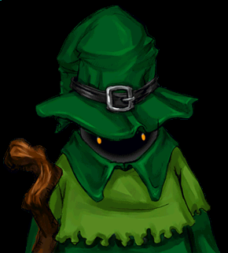
boy.spf

buls.spf
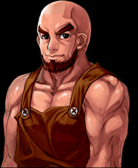
ed.spf
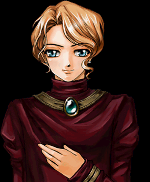
ed1.spf
girl.spf
girl2.spf
helper.spf
hof.spf
ia.spf
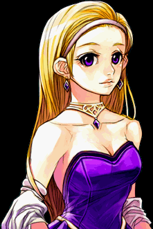
inn.spf

kan.spf
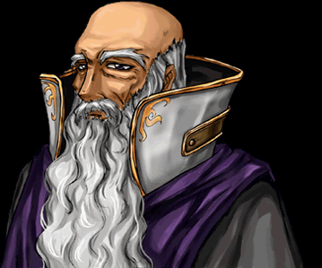
kan2.spf
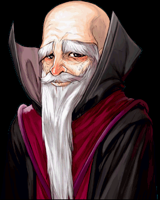
knight.spf
knight1.spf
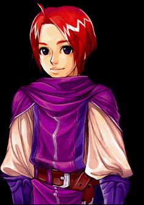
lady.spf
mage.spf
man1.spf
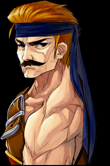
metus.spf
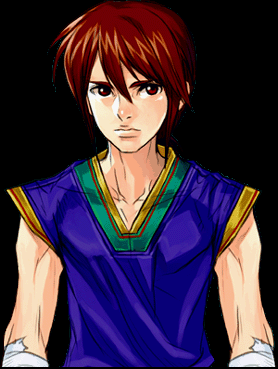
murkhan.spf
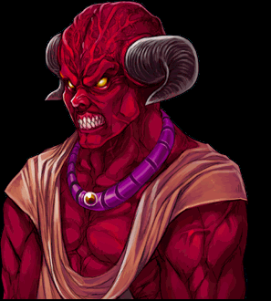
nori.spf
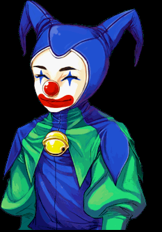
rho.spf

rose.spf
rose1.spf
rose2.spf
saser.spf
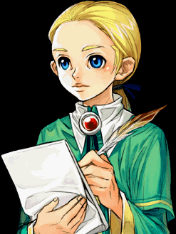
saser1.spf
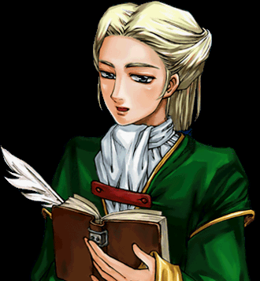
seaus.spf
seba.spf
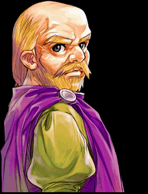
seoj.spf
setoa.spf
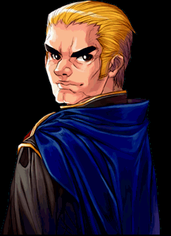
shaman.spf
spskill.spf
west1.spf
white.spf